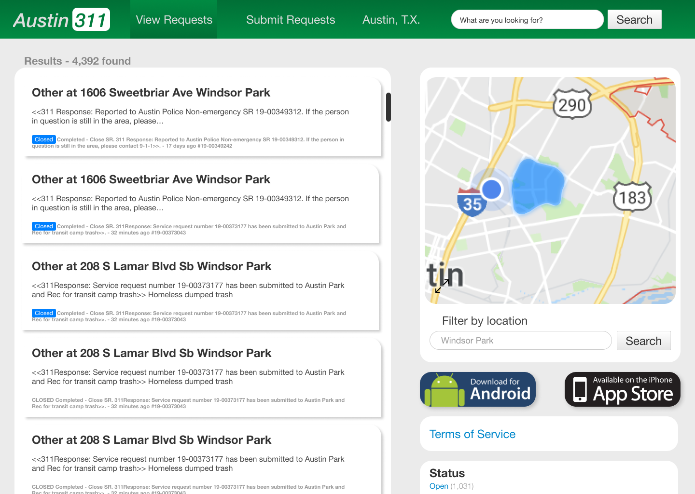
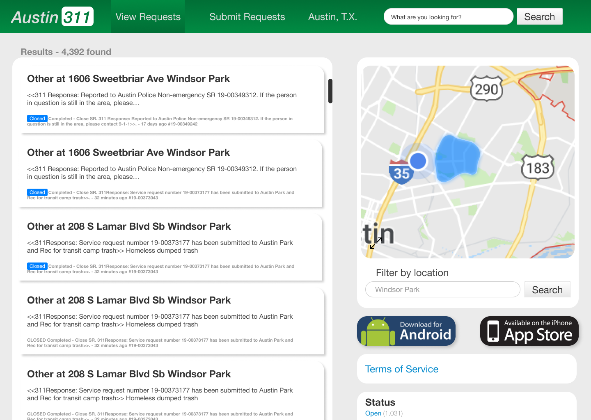

Austin 311: Interactive Map
How can we make it easier for users to find results that are relevant to their neighborhood?

Project Overview
- My Roles: Interaction Design
- Platform: Desktop
- Time Frame: 2 Weeks
- Tools: Paper Prototypes, Figma
The Problem
The search function on the 311 site for Austin, TX is severely lacking in the filter department. How can we make it easier for users to find results that are relevant to their neighborhood?
Ideation

To ideate rapidly I performed a series of crazy 8 exersises. The idea that seemed most like a minimally viable product was an interactive map that would allow users to filter 311 posts by neighborhood quickly and easily.
Low Fidelity Wireframes
Low fidelity wireframes gave me a sense of what the product would look like and how it could be implemented as simply as possible. It was important to not disturb the experience for users who were already familiar with the website.


Mid Fidelity Wireframes
Once I had built some mid fidelity wireframes the user journey began to develop more and opportunities for improvement continued to show themselves.

High Fidelity Comps & Prototype
Animations and transitions are used to provide feedback to the user, show relationships, and draw their attention to change. Due to the short timeframe of this project's research was suplemented with heuristic analysis. Given more time I would have introduced usability testing into each revision of the design.
 
